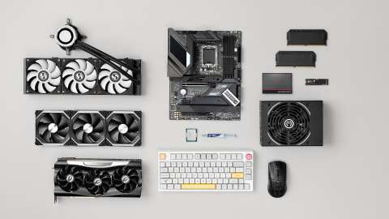
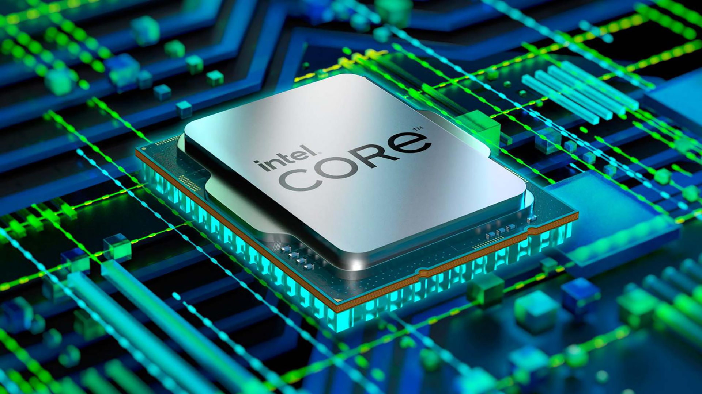
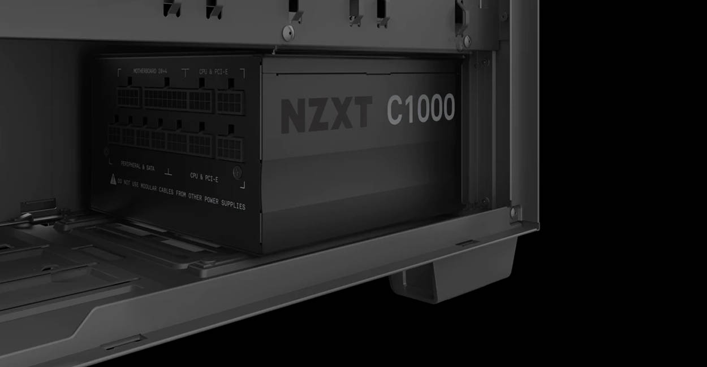
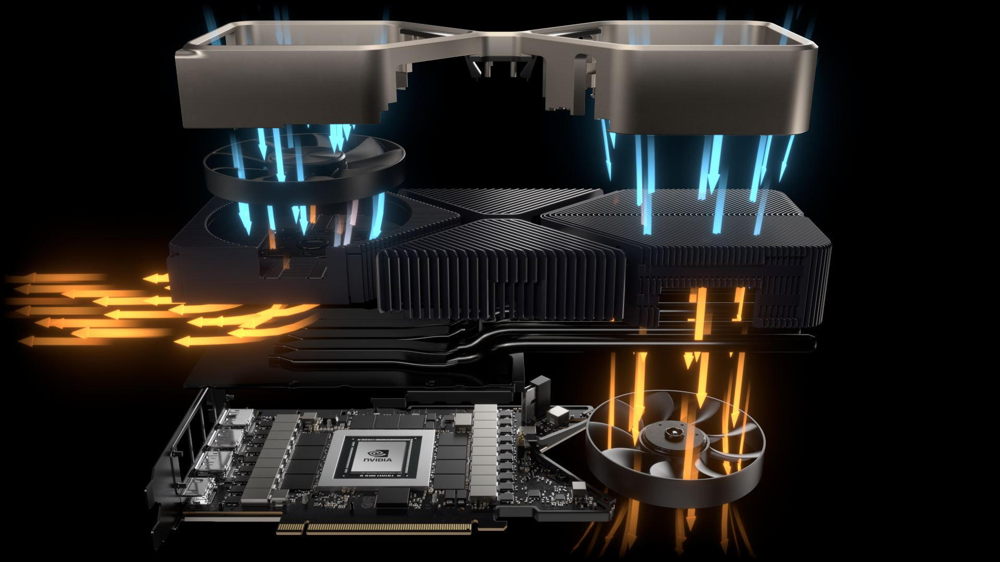
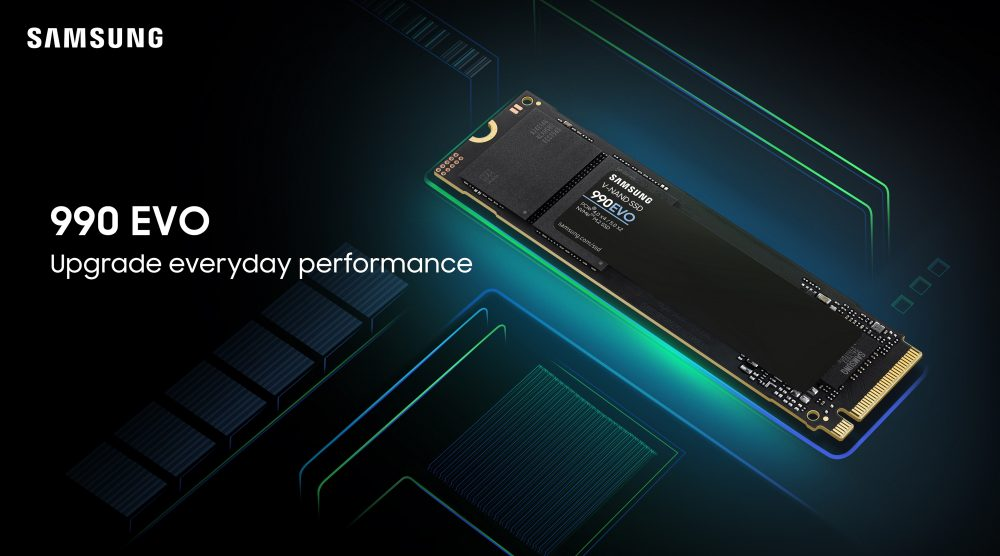
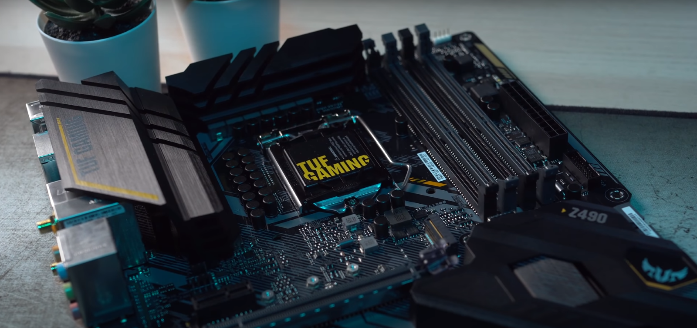
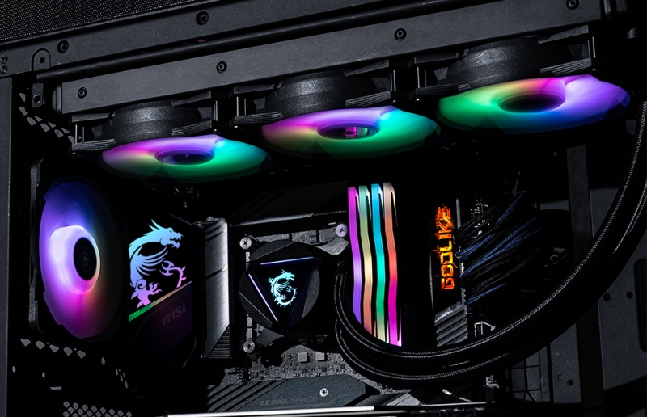

! ! ! - WEBSITE IS OFF WORK AT THE MOMENT, IT WILL BE UPDATED SOON - ! ! !
Componenti del PC
- CPU (Processore): È il cervello del computer, esegue le istruzioni dei programmi e gestisce tutte le altre componenti.
- GPU (Scheda Video):Gestisce l’elaborazione grafica e invia le immagini al monitor.
- Scheda Madre: È il cuore del sistema, ospita la CPU e fornisce connessioni tra tutte le altre componenti hardware.
- RAM: È la memoria a breve termine del computer, utilizzata per memorizzare i dati temporanei mentre la CPU esegue i programmi.
- Memoria: Fornisce lo storage a lungo termine per i dati e i programmi del sistema operativo.
- Dissipatore: Raffredda la CPU e può essere ad aria o a liquido
- PSU (Alimentatore): Fornisce energia elettrica a tutte le componenti del PC.
- Case: È la struttura fisica che contiene e protegge tutti i componenti hardware.

CPU (Processore)
Le CPU, o core, sono il "cervello" di un computer. Questi chip svolgono una vasta gamma di operazioni fondamentali necessarie per far funzionare un sistema informatico. Le CPU sono composte da diverse parti:
Le CPU interpretano le istruzioni dei programmi, eseguono le operazioni aritmetiche, gestiscono l'input e l'output dei dati e mantengono l'intera struttura del sistema in funzione. L'efficienza di una CPU è determinata dalla sua architettura, velocità di clock (frequenza a cui esegue le istruzioni) e dal numero di core, ovvero il numero di "cervelli" indipendenti all'interno della CPU che possono eseguire operazioni in parallelo.
- Unità di controllo: gestisce e coordina le operazioni all'interno della CPU e controlla il flusso dei dati tra la memoria, i dispositivi di input/output e le altre parti del computer.
- Unità di calcolo: esegue le istruzioni e i calcoli aritmetici richiesti dai programmi.
- Memoria cache: una memoria veloce integrata nella CPU che conserva temporaneamente i dati frequentemente utilizzati per accelerare l'accesso ai dati e migliorare le prestazioni complessive.
Le CPU interpretano le istruzioni dei programmi, eseguono le operazioni aritmetiche, gestiscono l'input e l'output dei dati e mantengono l'intera struttura del sistema in funzione. L'efficienza di una CPU è determinata dalla sua architettura, velocità di clock (frequenza a cui esegue le istruzioni) e dal numero di core, ovvero il numero di "cervelli" indipendenti all'interno della CPU che possono eseguire operazioni in parallelo.

RAM (Random Access Memory)
Le RAM (Random Access Memory) sono dispositivi fondamentali nei computer e negli apparecchi elettronici che memorizzano temporaneamente i dati necessari per l'esecuzione dei programmi. I diversi standard DDR (Double Data Rate) rappresentano diverse generazioni di questa memoria, ognuna con caratteristiche e prestazioni diverse:
Scopri le differenze tra DDR
- DDR (Double Data Rate): È stata la prima generazione di RAM DDR introdotta sul mercato. Operava a velocità di clock più basse rispetto ai successivi standard DDR2, DDR3, DDR4 e DDR5. La DDR ha contribuito a migliorare le prestazioni rispetto alla SDRAM (Synchronous Dynamic RAM) grazie al suo metodo di trasferimento dati a doppio rateo. Tuttavia, era inferiore in termini di velocità e capacità rispetto alle generazioni successive.
- DDR2 (Double Data Rate 2): È stata introdotta per la prima volta nel 2003 come evoluzione della DDR. Offriva velocità di trasferimento dati più elevate e un consumo energetico inferiore rispetto alla DDR. Questo standard ha migliorato notevolmente le prestazioni rispetto alla sua predecessora.
- DDR3 (Double Data Rate 3): È stata ampiamente utilizzata nei computer tra il 2007 e il 2017. La DDR3 operava a tensioni di alimentazione più elevate rispetto ai successivi standard DDR4 e DDR5, offrendo velocità di trasferimento dati fino a 2133 MT/s (milioni di trasferimenti al secondo).
- DDR4 (Double Data Rate 4): È diventata lo standard prevalente per la RAM nei computer di fascia media e alta intorno al 2017. Operando a tensioni di alimentazione inferiori, la DDR4 offre velocità di trasferimento dati più elevate rispetto alla DDR3, fino a 3200 MT/s (e oltre con overclocking).
- DDR5 (Double Data Rate 5): È il più recente standard di RAM, introdotto sul mercato nel 2020/2021. La DDR5 è progettata per offrire prestazioni ancora più elevate rispetto alla DDR4. Ha una maggiore larghezza di banda e una capacità di trasferimento dati ancora superiore, fino a 6400 MT/s (e oltre con overclocking). Inoltre, presenta miglioramenti nell'efficienza energetica e nella gestione delle prestazioni.

PSU (Power Supply Unity)
L'Alimentatore o PSU (Power Supply Unity) sono componenti fondamentali di un computer che convertono la corrente alternata (AC) in corrente continua (DC), fornendo energia ai vari componenti hardware. Le efficienze dei PSU sono indicate dalle certificazioni 80 PLUS, che assicurano che l’alimentatore operi con un’efficienza di almeno l’80% a carichi del 20%, 50% e 100%. Più alta è la certificazione, maggiore è l’efficienza e quindi minore è il consumo energetico e la produzione di calore. Questo può tradursi in una maggiore affidabilità e durata dell’alimentatore e dei componenti del PC.
Cavi ATX: per la scheda madre
Cavi EPS: per la CPU
Cavi PCIe: per la scheda video
Cavi SATA: per dischi rigidi o SSD
Cavi Molex: per dispositivi interni
80+ Bronze: Efficienza del 82% al 20% e 100% di carico, e del 85% al 50% di carico.
80+ Silver: Efficienza dell’85% al 20% e 100% di carico, e del 88% al 50% di carico.
80+ Gold: Efficienza dell’87% al 20% e 100% di carico, e del 90% al 50% di carico.
Guarda le tipologie di cavi
Guarda le tipologie efficienze

GPU (Scheda Video)
Le GPU, o schede video, sono componenti hardware progettati per accelerare e ottimizzare i calcoli legati alla grafica e all'elaborazione parallela. Solitamente, sono utilizzati nei computer per renderizzare immagini, video e grafica 3D in tempo reale.
Le GPU sono composte da migliaia di piccoli processori chiamati "core". Questi core lavorano insieme per gestire compiti intensivi di calcolo in parallelo, rendendo le GPU estremamente efficaci nel manipolare e visualizzare grandi quantità di dati simultaneamente.
Negli ultimi anni, le GPU hanno visto un'enorme evoluzione, diventando sempre più potenti e efficienti, e hanno esteso il loro utilizzo oltre il semplice ambito grafico per supportare una vasta gamma di compiti computazionali.
Le GPU sono composte da migliaia di piccoli processori chiamati "core". Questi core lavorano insieme per gestire compiti intensivi di calcolo in parallelo, rendendo le GPU estremamente efficaci nel manipolare e visualizzare grandi quantità di dati simultaneamente.
Negli ultimi anni, le GPU hanno visto un'enorme evoluzione, diventando sempre più potenti e efficienti, e hanno esteso il loro utilizzo oltre il semplice ambito grafico per supportare una vasta gamma di compiti computazionali.

Memorie (NVME, SSD e HDD)
Le MEMORIE, o memorie fisse del computer, si riferiscono principalmente alle memorie di archiviazione permanente utilizzate per conservare dati a lungo termine. Queste memorie vengono spesso chiamate dispositivi di archiviazione di massa e sono fondamentali per conservare il sistema operativo, i programmi e i dati utente. Le tre principali tipologie di memorie fisse sono le Non Volatile Memory Express (NVMe), il Solid State Drive (SSD) e l'Hard Disk Drive (HDD).
Vai a vedere la lista delle memorie
Scopri le differenze tra memorie
- NVMesi riferiscono a un tipo di tecnologia di storage che offre prestazioni superiori rispetto agli standard precedenti come SATA (Serial ATA). Le memorie fisse NVMe sono spesso progettate per sfruttare a pieno le potenzialità delle moderne memorie flash. Alcune caratteristiche di questa tipologia di memoria sono per esempio l'elevata velocità di scrittura e lettura dei dati, la bassa latenza e sicuramente la piccola dimensione e la facilità di installazione.
- SSDsono dispositivi di archiviazione che utilizzano memoria flash per memorizzare dati. Non hanno parti mobili e questo li rende più veloci, affidabili e meo sensibili a urti e vibrazioni rispetto agli HDD.
- HDDsono dispositivi di archiviazione che utilizzano dischi magnetici rotanti per memorizzare i dati: ongi disco magnetuco è suddiviso in tracce e settori e possiede un braccio mobile che scrive e legge i dati.

Scheda Madre
La Scheda Madre viene prodotta in diversi formati, come ATX, micro-ATX, e mini-ITX, che differiscono per dimensioni e funzionalità. Ogni formato include tutto il necessario per far funzionare il computer a un livello di base, ma i formati più grandi offrono più opzioni di espansione e funzionalità. La scheda madre è un circuito stampato che collega tutti i componenti principali del PC, permettendo loro di comunicare tra loro.
Guarda le periferiche della scheda madre
- Socket della CPU: È il connettore per il processore.
- Slot per la GPU: Per inserire la scheda grafica.
- Slot per la RAM: Per installare la memoria RAM.
- Connetori per archiviazione: Per collegare dischi rigidi e unità a stato solido.
- Connettori per i dispositivi esterni: Come USB, audio, Ethernet.
- Batteria CMOS: Mantiene le impostazioni del BIOS/UEFI.
- Conntettori di alimentazione: Forniscono energia alla scheda madre e ai componenti

Dissipatori ad aria e liquido AIO
I dissipatori CPU sono dispositivi essenziali per mantenere la temperatura del processore entro limiti sicuri, migliorando così le prestazioni e la longevità del sistema. Esistono due tipi principali di dissipatori:
Differenze tra i due
- Dissipatori ad aria: utilizzano una combinazione di piastre metalliche e ventole per trasferire il calore dalla CPU all’aria circostante. Una piastra metallica assorbe il calore dalla CPU e lo trasferisce a delle alette, dove viene poi disperso da una o più ventole.
- Dissipatori a liquido AIO (All In One): sono sistemi chiusi che utilizzano un liquido refrigerante per trasportare il calore lontano dalla CPU. Una pompa fa circolare il liquido attraverso un blocco di raffreddamento attaccato alla CPU, poi il liquido caldo viene trasferito a un radiatore dove viene raffreddato dalle ventole prima di ritornare al blocco di raffreddamento.
